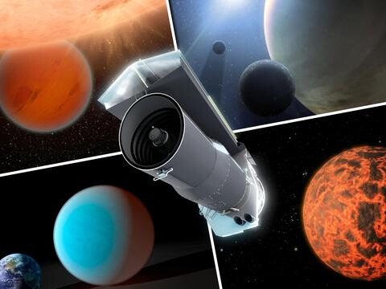
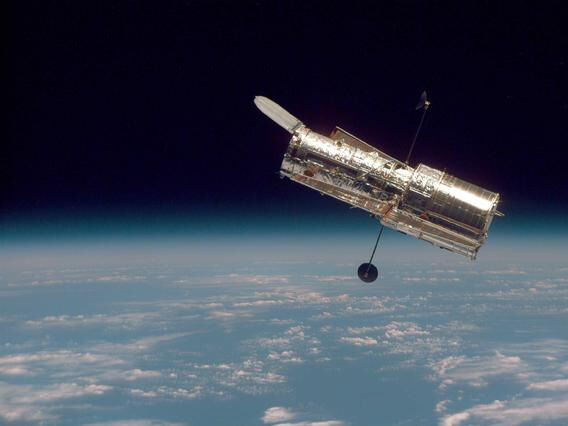

You'll need to take a spaceship as these telescopes are far out in space! But we'd be happy to see you as it gets really lonely out here. Please bring chocolate as we likely ran out months ago.

Spitzer Space Telescope
NASA's Spitzer was the first telescope to detect light from an exoplanet, or a planet outside our solar system. Spitzer uses an ultra-sensitive infrared telescope to study asteroids, comets, planets and distant galaxies.
Learn more

Hubble Space Telescope
The Hubble Space Telescope's design, technology and serviceability have made it one of NASA's most transformative observatories. From determining the atmospheric composition of planets around other stars to discovering dark energy, Hubble has changed humanity's understanding of the universe.
Learn more

James Webb Space Telescope
Webb is the premier observatory of the next decade, serving thousands of astronomers worldwide. It studies every phase in the history of our Universe.
Learn more